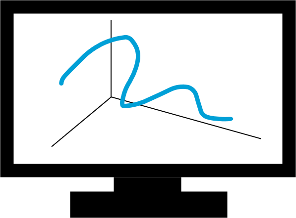
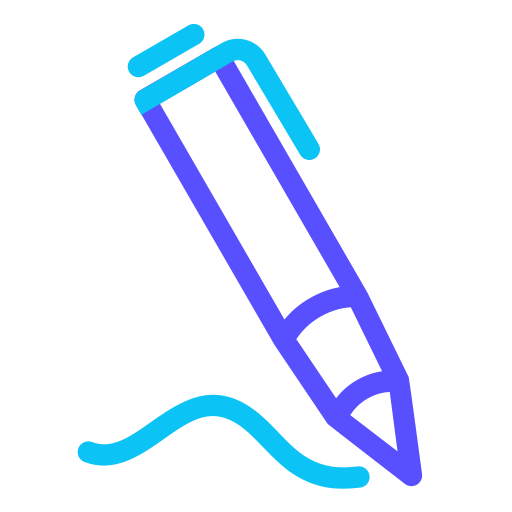

3Dペン
概要
専用ペンを使って、立体の絵を描くことができます。
ボタンを押しながら空中でペンを走らせると、リアルタイムで画面上に線が表示されます。
名前の通り、三次元で描けるペン！
方法
まず、ペン先を描きたい場所へ持っていきます。次に、ペンのボタンを押しながらペンを走らせます。ペンを動かした通りに、画面に線が表示されます。


メンバー
平田雄也 竹内紀彰 宮里考希 藤井尚輝 井道匠太 糸井柑人 髙木梨聖 土方真生 長谷川大起